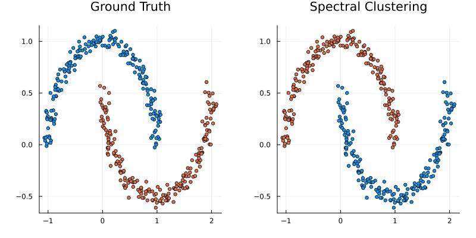
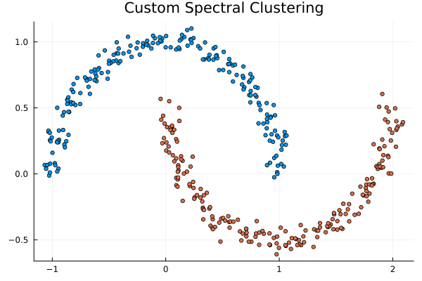

Getting Started
This guide will show you how to start using SpectralClustering.jl to perform clustering on non-linearly separable datasets.
Basic Usage
Spectral clustering is particularly useful when the clusters in your data are not linearly separable (like circles or moons). Let's see how SpectralClustering.jl performs on the "moons" dataset.
using SpectralClustering
using Plots
using Random
# 1. Generate a non-linearly separable dataset
rng = Xoshiro(42)
X, y_true = make_moons(rng, 400, noise=0.05)
# 2. Perform Spectral Clustering
# We expect 2 clusters (k=2)
k = 2
y_pred = spectral_cluster(X, k)
# 3. Plot the results
p1 = scatter(X[1,:], X[2,:], group=y_true, title="Ground Truth", legend=false, markersize=3)
p2 = scatter(X[1,:], X[2,:], group=y_pred, title="Spectral Clustering", legend=false, markersize=3)
plot(p1, p2, layout=(1,2), size=(800, 400), margin=5Plots.mm)
(Note: Because clustering is unsupervised, it assigns arbitrary integer labels to the groups it finds, meaning the predicted colors may appear swapped compared to the ground truth.)
Customizing the Algorithm
You can customize the different steps of the spectral clustering algorithm (affinity matrix construction, graph laplacian type, and discretization method) by passing keyword arguments to the spectral_cluster function.
# Using a different Laplacian and Kernel bandwidth
y_pred_custom = spectral_cluster(
X, 2;
affinity = RBFKernel(sigma=0.1),
laplacian = RandomWalkLaplacian(),
discretizer = KMeansDiscretization(true) # true for normalize_rows
)
scatter(X[1,:], X[2,:], group=y_pred_custom, title="Custom Spectral Clustering", legend=false, markersize=3)